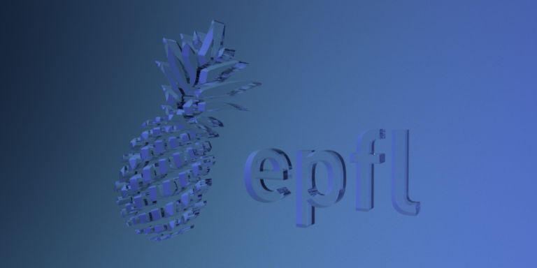

Assignment 4
在本作业中，我们需要实现一个直接光照的积分器。在作业的第二部分，我们还要实现电介质的 BSDF 模型。
Part 1
首先需要实现，让任何模型都能成为光源
nori建议我们对模型所有面均匀采样
步骤：
在模型上均匀采样一个坐标点
对每个顶点上的法线插值算出坐标点的法线。当网格没提供每个顶点的法线时，改为计算法线方向
计算概率密度，因为均匀采样，所以是表面积分之1
DiscretePDF类可以高效储存和查询离散pdf（看了下代码，它其实就是个前缀和…记录了每个三角形的总概率（就类似连续型随机变量的分布函数），最后归一化保证总概率是1）
使用重心坐标插值法线，可以使用公式：
( α β ) = ( 1 − 1 − ξ 1 ξ 2 1 − ξ 1 ) \begin{pmatrix}
\alpha\\
\beta
\end{pmatrix}
= \begin{pmatrix}
1 - \sqrt{1 - \xi_1}\\
\xi_2\, \sqrt{1 - \xi_1}
\end{pmatrix}
( α β ) = ( 1 − 1 − ξ 1 ξ 2 1 − ξ 1 )
其中，ξ 1 \xi_1 ξ 1 ξ 2 \xi_2 ξ 2 ( α , β , 1 − α − β ) (\alpha, \beta, 1-\alpha-\beta) ( α , β , 1 − α − β )
既然是均匀采样网格，那就把我们的实现放到mesh类里好了
因为采样需要返回坐标点，法线和pdf，我们定义一个struct来存这些数据
1 2 3 4 5 struct SampleMeshResult {float pdf;
在Mesh类里定义两个成员变量和用来查询的成员方法
1 2 3 4 5 6 7 8 9 class Mesh {public :const DiscretePDF& getPdf () const return m_disPdf; }SampleMeshResult sampleSurfaceUniform (Sampler* sampler) const ;protected :float m_area;
首先去activate函数里把每个三角形的pdf算出来。nori在解析场景xml的时候会调用一次这个函数
1 2 3 4 5 6 7 8 9 10 11 12 13 14 15 void Mesh::activate () if (!m_bsdf) {static_cast <BSDF*>(createInstance ("diffuse" , PropertyList ()));0.0f ;reserve (getTriangleCount ());for (uint32_t i = 0 ; i < getTriangleCount (); i++) {auto area = surfaceArea (i);append (area);normalize ();
去mesh.cpp里实现均匀采样
1 2 3 4 5 6 7 8 9 10 11 12 13 14 15 16 17 18 19 20 21 22 23 24 25 SampleMeshResult Mesh::sampleSurfaceUniform (Sampler* sampler) const {uint32_t idx = m_disPdf.sample (sampler->next1D ());next2D ();float alpha = 1 - sqrt (1 - rng.x ());float beta = rng.y () * sqrt (1 - rng.x ());col (m_F (0 , idx));col (m_F (1 , idx));col (m_F (2 , idx));1 - alpha - beta) * v2;if (m_N.size () != 0 ) {col (m_F (0 , idx));col (m_F (1 , idx));col (m_F (2 , idx));1 - alpha - beta) * n2).normalized ();else {1. cross (e2).normalized ();getNormalization ();return result;
接下来，我们需要去Emitter类里面实现采样、计算pdf、返回radiance的函数，这些完全由我们来定义。教程建议参考BSDF类定义了的
BSDF有个用于用于传递各种参数的结构体BSDFQueryRecord，我们模仿着写一个
1 2 3 4 5 6 7 8 9 10 11 12 13 14 struct EmitterQueryRecord {float pdf;EmitterQueryRecord (const Point3f& ref) : ref (ref) {}EmitterQueryRecord (const Point3f& ref, const Point3f& p, const Normal3f& n) : ref (ref), p (p), n (n) {normalized ();
在Emitter（其实是个接口？）里照抄BSDF定义纯虚函数
1 2 3 4 5 6 7 8 9 10 11 12 13 14 class Emitter : public NoriObject {public :virtual ~Emitter () {}virtual Color3f eval (const EmitterQueryRecord& record) const 0 ;virtual Color3f getRadiance () const 0 ;virtual float pdf (const Mesh* mesh, const EmitterQueryRecord& lRec) const 0 ;virtual Color3f sample (const Mesh* mesh, EmitterQueryRecord& lRec, Sampler*) const 0 ;EClassType getClassType () const { return EEmitter; }
然后来实现这个接口。在源码里创建一个area.cpp，CMakeLists.txt里添加一下。
光源对着色点的贡献和入射角有关，可以直接在这里算渲染方程积分里面Li项
1 2 3 4 5 6 7 8 9 10 11 12 13 14 15 16 17 18 19 20 21 22 23 24 25 26 27 28 29 30 31 32 33 34 35 36 37 38 39 40 41 42 43 44 #include <nori/emitter.h> #include <nori/sampler.h> class AreaLight : public Emitter {private :public :AreaLight (const PropertyList& propList) {getColor ("radiance" );Color3f eval (const EmitterQueryRecord& record) const override {const EmitterQueryRecord& lRec = record;return (lRec.n.dot (lRec.wi) < 0.0f ) ? m_radiance : 0.0f ;Color3f getRadiance () const override {return m_radiance;Color3f sample (const Mesh* mesh, EmitterQueryRecord& lRec, Sampler* sample) const override {auto sRec = mesh->sampleSurfaceUniform (sample);normalized ();Ray3f (lRec.ref, lRec.wi, Epsilon, (lRec.p - lRec.ref).norm () - Epsilon);pdf (mesh, lRec);if (lRec.pdf > 0.0f && !std::isnan (lRec.pdf) && !std::isinf (lRec.pdf)) {return eval (lRec) / lRec.pdf;return Color3f (0.0f );float pdf (const Mesh* mesh, const EmitterQueryRecord& lRec) const override float cosTheta = lRec.n.dot (-lRec.wi);if (cosTheta > 0.0f ) {return mesh->getPdf ().getNormalization () * (lRec.p - lRec.ref).squaredNorm () / cosTheta;return 0.0f ;std::string toString () const override {return "Emitter[]" ;NORI_REGISTER_CLASS (AreaLight, "area" )
Part 2
接下来，我们就要把所有东西组装起来了！
在此之前，先回顾一下渲染方程：
L r ( x , ω r ) = ∫ H 2 f r ( x , ω i , ω r ) L i ( x , ω i ) cos θ i d ω i . \newcommand{\vx}{\mathbf{x}}
\newcommand{\vc}{\mathbf{c}}
\newcommand{\vy}{\mathbf{y}}
\newcommand{\vn}{\mathbf{n}}
L_r(\vx,\omega_r) = \int_{\mathcal{H}^2} f_r (\vx,\omega_i,\omega_r)\,L_i (\vx,\omega_i) \cos\theta_i\, \mathrm{d}\omega_i.
L r ( x , ω r ) = ∫ H 2 f r ( x , ω i , ω r ) L i ( x , ω i ) cos θ i d ω i .
我们有BSDF类可以计算f r f_r f r Emitter类可以计算L i L_i L i
更好的办法是，直接在光源上采样并检查可见性，而不是在物体表面采样。这意味着我们需要将渲染方程从半球上改写到光源上
\newcommand{\vr}{\mathbf{r}}
L_r(\vx,\omega_r) = \int_{\mathcal{L}} f_r (\vx,\vx\to\vy,\omega_r)\,L_e (\vy,\vy\to\vx) \, \mathrm{d} \vy
其中x → y \mathbf{x}\to\mathbf{y} x → y L e ( x , ω ) L_e(x,\omega) L e ( x , ω ) x x x ω \omega ω
但是这个积分算式不正确，因为我们将积分变量从立体角改为了位置，应该再加一项几何项
G(\vx\leftrightarrow\vy) :=V(\vx\leftrightarrow\vy)\frac{
|\vn_\vx \cdot(\vx\to\vy)|\,\cdot\,
|\vn_\vy \cdot(\vy\to\vx)|}{\|\vx-\vy\|^2}
第一项V ( x ↔ y ) V(x\leftrightarrow y) V ( x ↔ y )
\newcommand{\vr}{\mathbf{r}}
L_r(\vx,\omega_r) = \int_{\mathcal{L}} f_r (\vx,\vx\to\vy,\omega_r)\,G(\vx\leftrightarrow\vy)\,L_e (\vy,\vy\to\vx)\, \mathrm{d} \vy
注意，原渲染方程中的余弦项合并到了几何项里面，并没有消失
现在我们可以真的开始写分布光追了！
1 2 3 4 5 6 7 8 9 10 11 12 13 14 15 16 17 18 19 20 21 22 23 24 25 26 27 28 29 30 31 32 33 34 35 36 37 38 39 #include <nori/integrator.h> #include <nori/scene.h> #include <nori/sampler.h> #include <nori/emitter.h> #include <nori/bsdf.h> class WhittedIntegrator : public Integrator {public :WhittedIntegrator (const PropertyList& props) {}Color3f Li (const Scene* scene, Sampler* sampler, const Ray3f& ray) const {Color3f color (0.0f ) ;if (!scene->rayIntersect (ray, its)) {return color;Color3f Le (0.0f ) ;if (its.mesh->isEmitter ()) {EmitterQueryRecord lRecE (ray.o, its.p, its.shFrame.n) ;getEmitter ()->eval (lRecE);BSDFQueryRecord bRec (its.shFrame.toLocal(-ray.d)) ;getBSDF ()->sample (bRec, sampler->next2D ());0 ;Ray3f (its.p, its.shFrame.toWorld (bRec.wo), 0.0001f );if (scene->rayIntersect (rayR, itsR)) {if (itsR.mesh->isEmitter ()) {EmitterQueryRecord (its.p, itsR.p, itsR.shFrame.n);getEmitter ()->eval (lRec);return Le + Li * f;std::string toString () const {return "WhittedIntegrator[]" ;NORI_REGISTER_CLASS (WhittedIntegrator, "whitted" );
编译运行！
再跑一跑测试
Part 3
这部分我们需要实现一个电介质材质（就是绝缘体）
nori已经帮我们定义好了基于Dirac delta function（这是啥？）的完美镜面反射的mirror材质和菲涅尔项的计算函数
需要实现的电介质材质代码在src/dielectric.cpp
1 2 3 4 5 6 7 8 9 10 11 12 13 14 15 16 17 18 Color3f sample (BSDFQueryRecord& bRec, const Point2f& sample) const {float cosThetaI = Frame::cosTheta (bRec.wi);float kr = fresnel (cosThetaI, m_extIOR, m_intIOR);if (sample.x () < kr) {Vector3f (-bRec.wi.x (), -bRec.wi.y (), bRec.wi.z ());1.f ;return Color3f (1.0f );else {0 ? m_extIOR / m_intIOR : m_intIOR / m_extIOR;0 ? Normal3f (0.f , 0.f , -1.f ) : Normal3f (0.f , 0.f , 1.f );abs (cosThetaI);float cosThetaO = sqrt (1 - bRec.eta * bRec.eta * fmax (0.f , 1.f - cosThetaI * cosThetaI));normalize ();return Color3f (bRec.eta * bRec.eta);
说实话完全不知道要如何写…这段代码是CV来的…不过不影响我们使用（233
Part 4
现在我们要实现whitted-style光追
漫反射材质我们从光源上采样，但是镜面材质和电介质不行，它们的pdf永远是0，所以只能根据bsdf去采样出射方向。
因为反射和折射可以无限递归下去，直到打中漫反射材质，所以可以用以下方程来估计最终的radiance
L_i(\vc, \omega_c) = \begin{cases}
\frac{1}{0.95}c L_i(\vx, \omega_r),&\text{if $\xi < 0.95$}\\
0,&\text{otherwise}
\end{cases}
所以这是一个递归算法
现在可以修改WhittedIntegrator
1 2 3 4 5 6 7 8 9 10 11 12 13 14 15 16 17 18 19 20 21 22 23 24 25 26 27 28 29 30 31 32 33 34 Color3f Li (const Scene* scene, Sampler* sampler, const Ray3f& ray) const {Color3f color (0.0f ) ;if (!scene->rayIntersect (ray, its)) {return color;Color3f Le (0.0f ) ;if (its.mesh->isEmitter ()) {EmitterQueryRecord lRecE (ray.o, its.p, its.shFrame.n) ;getEmitter ()->eval (lRecE);if (its.mesh->getBSDF ()->isDiffuse ()) {BSDFQueryRecord bRec (its.shFrame.toLocal(-ray.d)) ;getBSDF ()->sample (bRec, sampler->next2D ());0 ;Ray3f (its.p, its.shFrame.toWorld (bRec.wo));if (scene->rayIntersect (rayR, itsR)) {if (itsR.mesh->isEmitter ()) {EmitterQueryRecord (its.p, itsR.p, itsR.shFrame.n);getEmitter ()->eval (lRec);return Le + Li * f;else {bRec (its.toLocal (-ray.d));getBSDF ()->sample (bRec, sampler->next2D ());if (sampler->next1D () < 0.95 && refColor.x () > 0.f ) {return Li (scene, sampler, Ray3f (its.p, its.toWorld (bRec.wo))) / 0.95 * refColor;else {return Color3f (0.0f );
